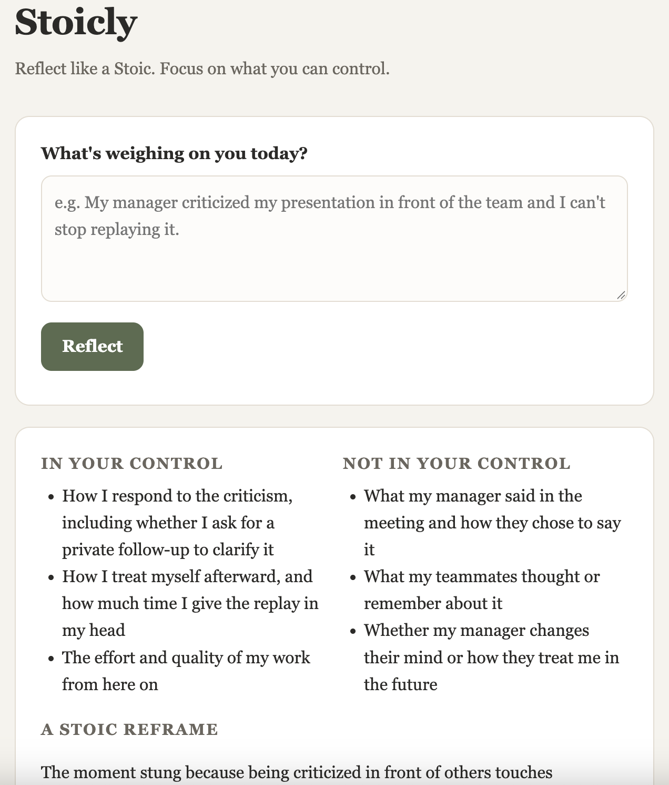

NYU Stern · Building with AI · Fall 2026
Stoicly
An AI-powered reflection app for anyone seeking self-improvement: describe a challenge, get a Stoic reframe and one small action, and track your growth over time.
Product Showcase (Prototype / Live App / 2-Min Video)
Current Status: Build 1 · local prototype (Python + Flask, runs on my laptop)
Demo: Screenshot of the local prototype below. A live cloud URL and 2-minute video come in Build 5.

How it works: write what's weighing on you → Stoicly separates what's in your control from what isn't, offers a Stoic reframe and a real quote from Marcus Aurelius, Epictetus, or Seneca, and suggests one action for today. Every reflection is saved to your history.
Living PRD (Product Requirements Document)
Updated every week as we test with real users and learn what works.
1. Target User & The Job to Be Done
Who is this for? People looking for self-help and personal growth who are curious about Stoic philosophy but don't know how to apply it day to day. First testers: [TODO Juhi: name 2–3 specific people you can reach, e.g. classmates or friends].
The painful "Before" workflow: When something stressful happens (a harsh comment, a setback, a worry), they ruminate, vent to a friend, or scroll generic self-help content. Stoic books are dense and hard to apply in the moment, journaling with a blank page offers no guidance, and there's no record of how they handled past challenges.
The "After" workflow with this product: In under two minutes they write what's bothering them and get a structured Stoic reflection: what's in their control vs. not, a kind reframe, a relevant real quote, and one concrete action for today. Each reflection is saved so they can look back and see their growth.
2. Scope & Explicit Non-Goals
- In Scope (Core Workflow): Describe a challenge → receive a Stoic reflection (control split, reframe, quote, one action) → it's saved to your personal history.
- Out of Scope #1: Therapy or crisis support. Stoicly is a reflection tool and points people in crisis to the 988 Lifeline.
- Out of Scope #2: Native mobile apps, push notifications, or social/community features.
- Out of Scope #3: Gamification (streaks, badges) and a full Stoic library or course content.
3. How It Works Under the Hood & Riskiest Assumption (Week 2+)
Riskiest Assumption: That AI reflections feel generic or preachy, so users don't come back. Secondary risk: the model inventing fake Stoic quotes.
Simple Architecture: Journal entry (browser) → Flask app (Python, local) → Claude Haiku 5.5 via OpenRouter → structured Stoic reflection, saved to a local JSON history
4. Unit Economics & Analytics Snapshot (Updated Weekly)
Cumulative Build Spend
$[TODO]
Est. Cost Per User Run
≈ $0.0003 / reflection
User Evidence (Analytics from Build 2)
[Not yet measured]
Sponsor Call (Week 6)
TBD
Weekly Build Log
Build on at least two separate days each week outside class, including the November 3 break. Push commits and log actual progress, failures, PRD changes, costs, and hours here. All build deadlines are noon, New York time.
Build 1 · Intent.md & Throwaway Prototype (Due Nov 9)
- What shipped: A working local prototype (Flask + one HTML page): enter a challenge, get a structured Stoic reflection from Claude Haiku 5.5 via OpenRouter, and browse saved past reflections. API key is read from
.env only. Product Page and PRD v1 published.
- Things learned with AI: [TODO Juhi: in your own words]
- What broke / changed in PRD: Narrowed "track personal growth" to a simple saved history for now; trends/insights deferred until real users show what they want. Asking the model for structured JSON made the output consistent and easy to display.
- Cost & time this week: $[TODO] · [TODO] hours
Build 2 · Smallest Local Version & PostHog (Due Nov 16)
- What shipped: [Local working slice, PostHog verified on this page and the local app, PRD v2, and local setup in AGENTS.md]
- What broke / changed in PRD: [Fill in]
- Cost & time this week: $[0.00] · [0] hours
Build 3 · Build.exe: The Core Workflow (Due Nov 23)
- What shipped: [End-to-end workflow working with real inputs + PostHog funnel events]
- What broke / changed in PRD: [Fill in]
- Cost & time this week: $[0.00] · [0] hours
Build 4 · Test.py: Choose Track A or Track B (Due Nov 30)
- Chosen track: [A: 10-case domain eval and one outside target-user review; OR B: 3–5 outside users and replay findings]
- Results and improvements: [Before/after evidence; for Track B, fixes to the top three friction points]
- PRD v4 changes: [What the evidence changed]
- Cost & time this week: $[0.00] · [0] hours
Build 5 · Ship.installer: Launch Ops, Rollback Check & 2-Min Video (Due Dec 7)
- Launch Ops & Safety: [Verified no exposed keys, set spend cap, tested 2-minute rollback]
- 2-Minute Video & Final Polish: [Link/embed above]
- Cost & time this week: $[0.00] · [0] hours